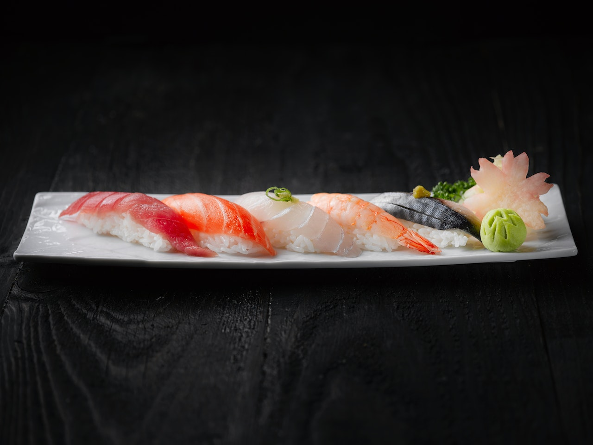
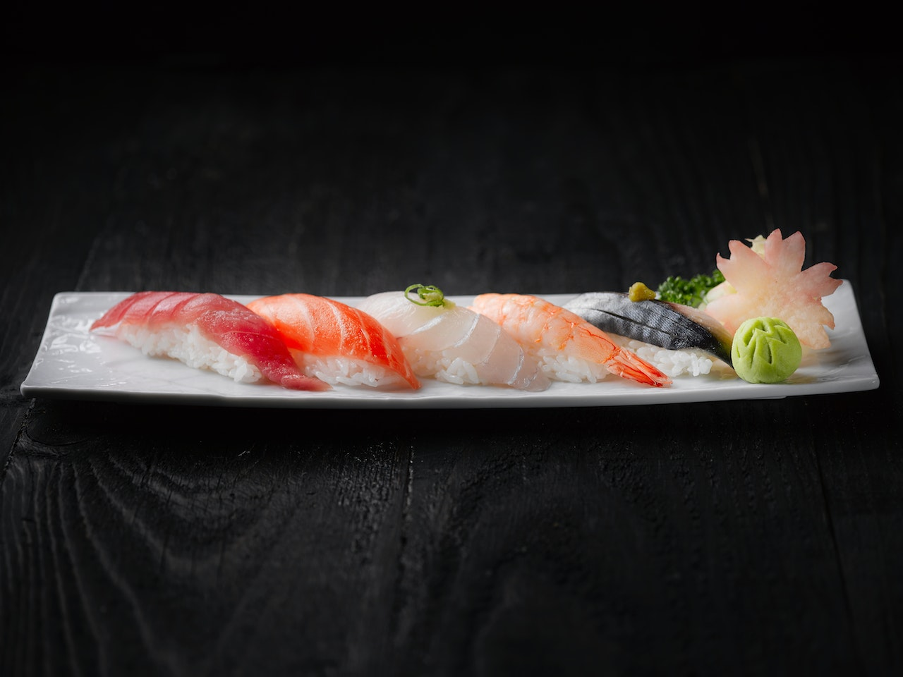
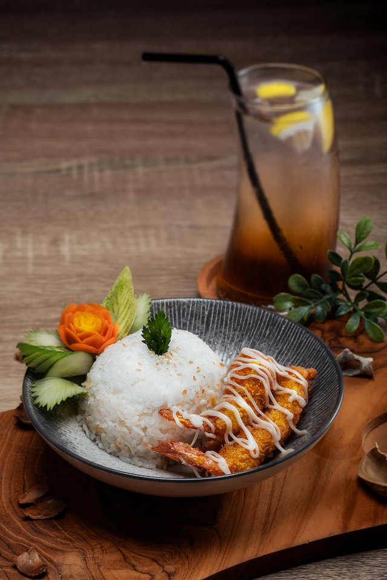
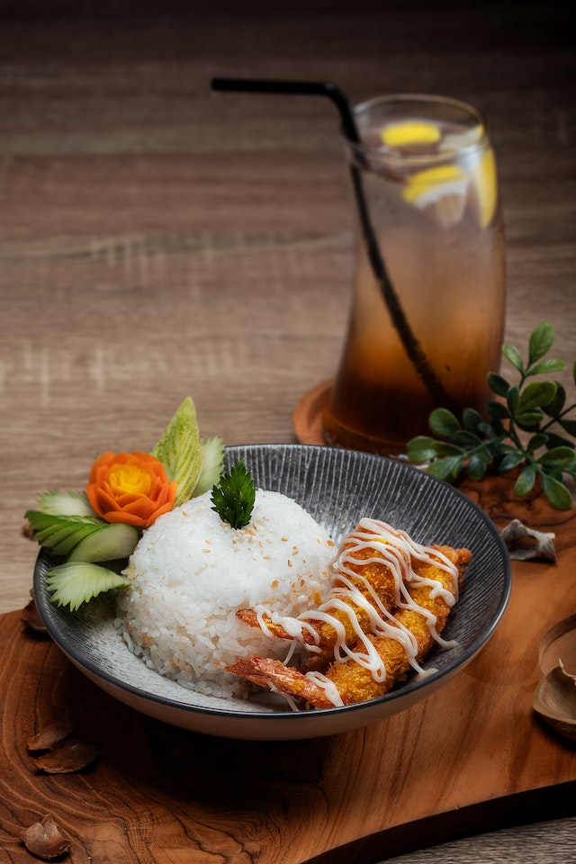
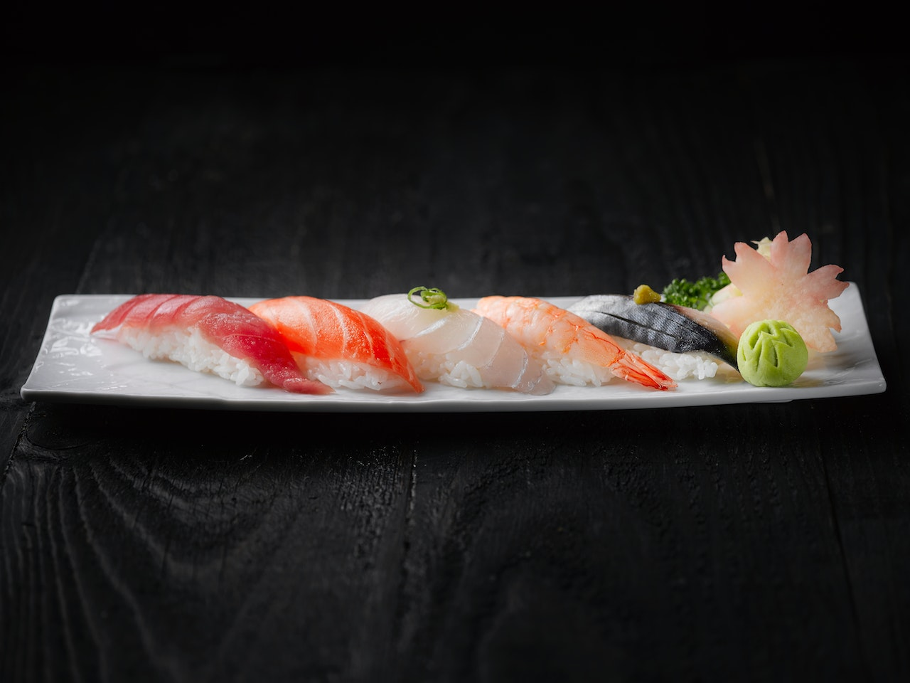
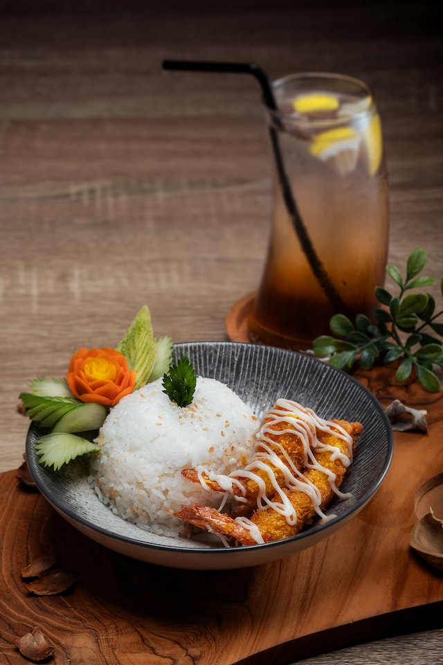

 

Donburi means rice bowl in Japanese!
Cafe Donburi is located in East Kilbride, Glasgow, and serves authentic Japanese food. We specialise in rice bowls, as well as sushi, noodles, and all of your favourite Japanese cuisine.
Book a table now, or phone 01355 123 456 for takeaway or home delivery.

